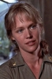

Country:United States, 80 minutes
Spoken languages:
Genres:Drama
Director(s):George Armitage
Writer(s):George Armitage
Video Codec:Unknown
Number: 1100


Certification:R
Storyline:
A trio of beautiful private-duty nurses that practice more than the medical arts must confront underground drug traffickers, racism and murder in their local hospital.
Cast: 

Medium: Original DVD,
Comments: Part of: The Nurses Collection
Loaned: No
Aspect ratio: Unknown